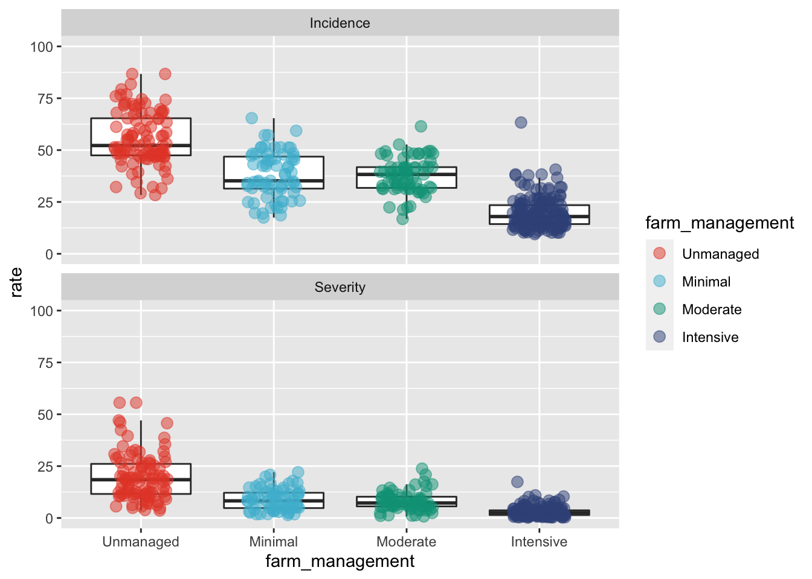
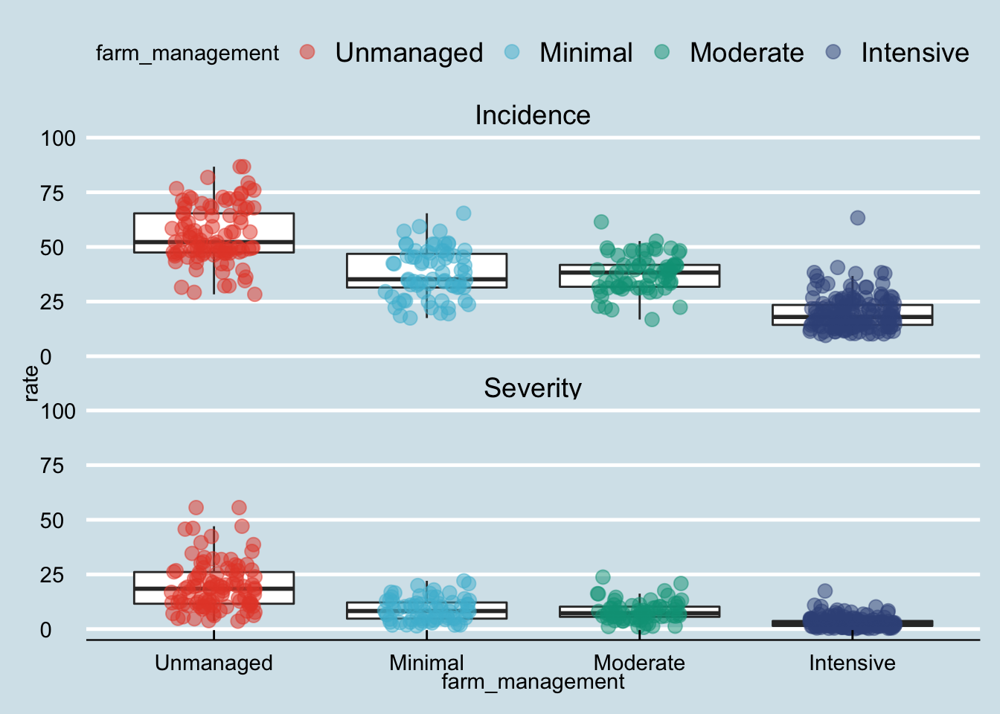
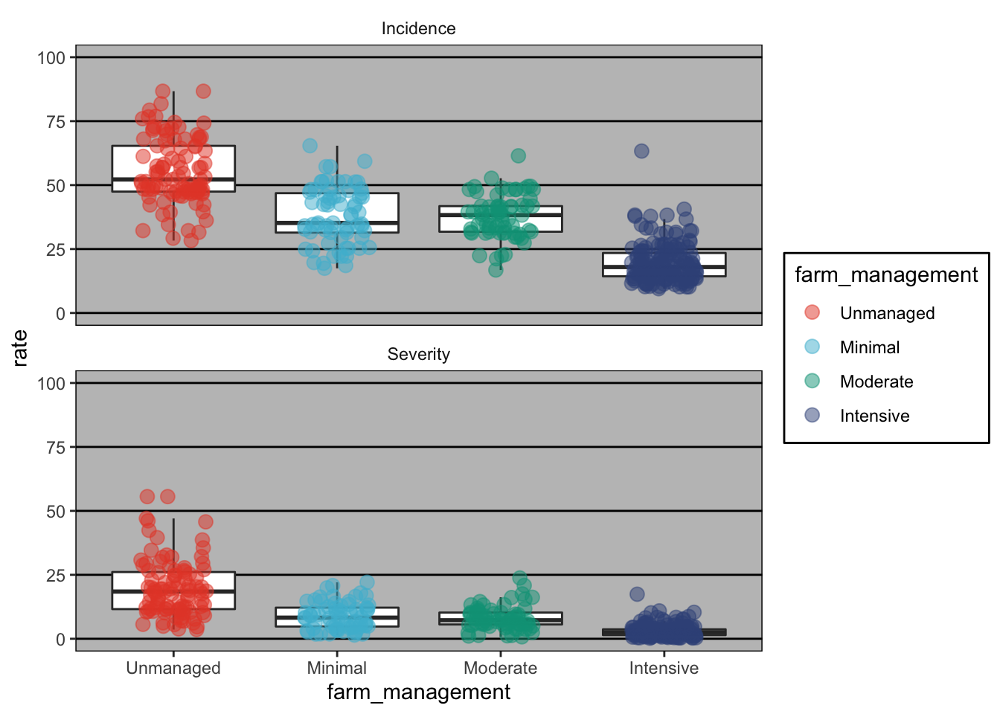
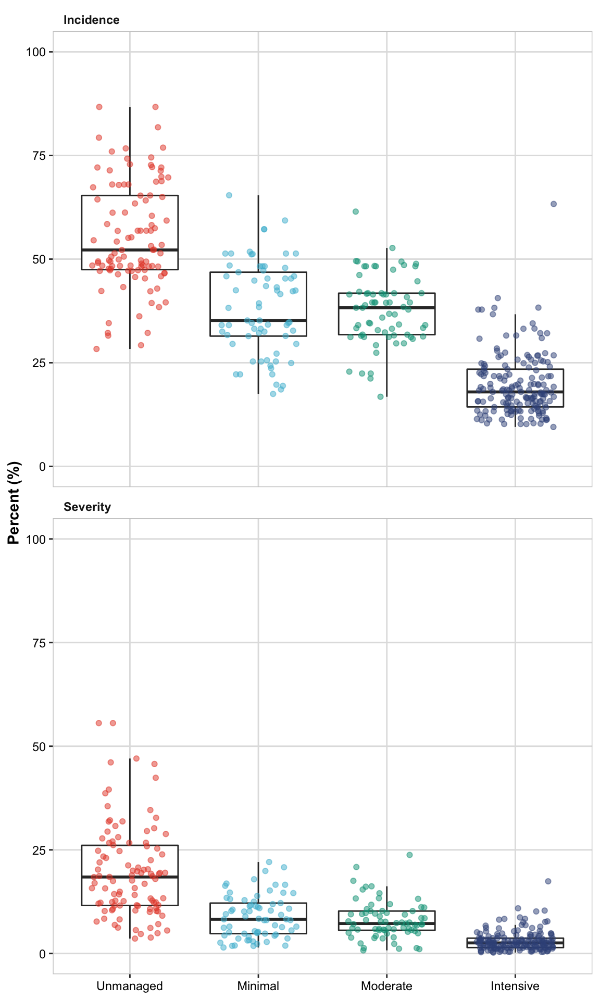

Introduction to ggplot2
ggplot2
Packages
These are the packages that will be used in this module. These packages should have been installed prior to the workshop.
library(tidyverse)## ── Attaching packages ─────────────────────────────────────── tidyverse 1.3.0 ──## ✓ ggplot2 3.3.3 ✓ purrr 0.3.4
## ✓ tibble 3.0.6 ✓ dplyr 1.0.4
## ✓ tidyr 1.1.2 ✓ stringr 1.4.0
## ✓ readr 1.4.0 ✓ forcats 0.5.1## ── Conflicts ────────────────────────────────────────── tidyverse_conflicts() ──
## x dplyr::filter() masks stats::filter()
## x dplyr::lag() masks stats::lag()library(ggsci)
library(ggthemes)Plotting
Here is the plot that we will eventually build today. We will show you the code here, and the finished product, but will walk through how to build this graph step-by-step.
ggplot(survey_data_long, aes(x= farm_management, y = rate))+
geom_boxplot(outlier.alpha = 0)+
geom_jitter(aes(color = farm_management),
size = 3, width = 0.2, alpha = .5)+
facet_wrap(~metric, ncol = 1)+
scale_color_npg()+
labs(title = "Disease distribution\nacross farm mannagement",
x = NULL,
y = "Percent (%)",
color = "Farm management")+
theme(
panel.background = element_blank() ,
panel.grid.major = element_line(colour = "grey88") ,
panel.border = element_rect(colour = "grey80", fill = NA) ,
axis.text.y = element_text(colour = "black"),
axis.text.x = element_blank(),
title = element_text(face = "bold", size = 13),
legend.position = c(0.70, .37),
legend.key = element_rect(fill = "white"),
legend.text = element_text(colour = "black", size=12),
strip.text.x = element_text(hjust =0.01, face = "bold", size = 14),
strip.background = element_blank())
ggsave("graph/target.tiff",
width =140, height = 200, units = "mm", dpi = 300)ggplot2 basics
### Data organization
survey_data <- read_csv(here::here("data", "survey_clean.csv")) %>% select(-c(farm, region, zone, district, lon, lat)) ### read in data that was described in the previous module, and select the columns that we would like to use##
## ── Column specification ────────────────────────────────────────────────────────
## cols(
## farm = col_double(),
## region = col_character(),
## zone = col_character(),
## district = col_character(),
## lon = col_double(),
## lat = col_double(),
## altitude = col_double(),
## cultivar = col_character(),
## shade = col_character(),
## cropping_system = col_character(),
## farm_management = col_character(),
## inc = col_double(),
## sev2 = col_double()
## )head(survey_data) ## check the top lines of data ## # A tibble: 6 x 7
## altitude cultivar shade cropping_system farm_management inc sev2
## <dbl> <chr> <chr> <chr> <chr> <dbl> <dbl>
## 1 1100 Local Sun Plantation Unmanaged 86.7 55.6
## 2 1342 Mixture Mid shade Plantation Minimal 51.3 17.9
## 3 1434 Mixture Mid shade Plantation Minimal 43.2 8.25
## 4 1100 Local Sun Plantation Unmanaged 76.7 46.1
## 5 1400 Local Sun Plantation Unmanaged 47.2 12.3
## 6 1342 Mixture Mid shade Plantation Minimal 51.3 19.9Let’s get started with ggplot. What happens if we only run ggplot() without any additional information?
ggplot() 
Not much! We need to be sure to specify the data (survey_data) and aestetic elements (y and x axes).
ggplot(survey_data, aes(x= farm_management, y = inc))
class(survey_data$farm_management)## [1] "character"levels(survey_data$farm_management)## NULLsurvey_data = survey_data %>%
mutate(farm_management = factor(farm_management,
levels = c("Unmanaged", "Minimal", "Moderate", "Intensive")))
head(survey_data)## # A tibble: 6 x 7
## altitude cultivar shade cropping_system farm_management inc sev2
## <dbl> <chr> <chr> <chr> <fct> <dbl> <dbl>
## 1 1100 Local Sun Plantation Unmanaged 86.7 55.6
## 2 1342 Mixture Mid shade Plantation Minimal 51.3 17.9
## 3 1434 Mixture Mid shade Plantation Minimal 43.2 8.25
## 4 1100 Local Sun Plantation Unmanaged 76.7 46.1
## 5 1400 Local Sun Plantation Unmanaged 47.2 12.3
## 6 1342 Mixture Mid shade Plantation Minimal 51.3 19.9ggplot(survey_data, aes(x= farm_management, y = inc))
class(survey_data$farm_management)## [1] "factor"levels(survey_data$farm_management)## [1] "Unmanaged" "Minimal" "Moderate" "Intensive"Slide 7
ggplot(survey_data, aes(x= farm_management, y = inc))+
geom_boxplot()
ggplot(survey_data, aes(x= farm_management, y = inc))+
geom_point()
Slide 8
ggplot(survey_data, aes(x= farm_management, y = inc))+
geom_jitter()
ggplot(survey_data, aes(x= farm_management, y = inc))+
geom_jitter(width = 0.2)
Slide 9
ggplot(survey_data, aes(x= farm_management, y = inc))+
geom_jitter(width = 0.2)+
geom_boxplot()
ggplot(survey_data, aes(x= farm_management, y = inc))+
geom_boxplot(outlier.alpha = 0) +
geom_jitter(width = 0.2)
Slide 10
ggplot(survey_data, aes(x= farm_management, y = inc))+
geom_violin()
ggplot(survey_data, aes(x= inc))+
geom_histogram()## `stat_bin()` using `bins = 30`. Pick better value with `binwidth`.
ggplot(survey_data, aes(x= inc))+
geom_density()
Slide 11
ggplot(survey_data,aes(x= farm_management, y = inc))+
geom_dotplot(binaxis = "y",
stackdir = "center", binwidth = 1.2)
ggplot(survey_data, aes(x = inc, y = sev2))+
geom_point()
ggplot(survey_data, aes(x = inc, y = sev2))+
geom_point()+ geom_smooth() + geom_rug()## `geom_smooth()` using method = 'loess' and formula 'y ~ x'
Aesthetics
Slide 15
ggplot(survey_data, aes(x= farm_management, y = inc,
shape = farm_management,
color = farm_management))+
geom_boxplot(outlier.alpha = 0) +
geom_jitter(width = 0.2)
ggplot(survey_data, aes(x= farm_management, y = inc))+
geom_boxplot(outlier.alpha = 0) +
geom_jitter(aes(color = farm_management),width = 0.2)
Slide 16
ggplot(survey_data, aes(x= farm_management, y = inc))+
geom_boxplot(outlier.alpha = 0) +
geom_jitter(aes(color = farm_management),width = 0.2,
size = 3)
ggplot(survey_data, aes(x= farm_management, y = inc))+
geom_boxplot(outlier.alpha = 0) +
geom_jitter(aes(colour = farm_management),width = 0.2,
size = 3, alpha = 0.5)
Slide 17
ggplot(survey_data, aes(x= farm_management))+
geom_bar(aes(fill = cultivar)) 
ggplot(survey_data, aes(x= farm_management, y = inc))+
geom_jitter(width = 0.2, size = 4, shape = 21,
aes(fill = altitude ))
Slide 18
ggplot(survey_data, aes(x= farm_management, y = inc))+
geom_jitter(width = 0.2, size = 4,
aes(alpha = sev2 ))
ggplot(survey_data, aes(x= farm_management, y = inc))+
geom_jitter(width = 0.2, shape = 21, fill = "grey",
aes(size = sev2 ))
Slide 19
ggplot(survey_data, aes(x= farm_management, y = inc))+
geom_jitter(width = 0.2, size = 3, alpha = 0.8,
aes(shape = farm_management))
slide 20
ggplot(survey_data, aes(x= farm_management, y = inc))+
geom_jitter(width = 0.2, size = 3, alpha = 0.8, shape = 21,
aes(color = farm_management))
ggplot(survey_data, aes(x= farm_management, y = inc))+
geom_jitter(width = 0.2, size = 3, alpha = 0.8, shape = 21,
aes(fill = farm_management))
slide 21
ggplot(survey_data, aes(x=inc , y = sev2))+
geom_smooth(aes(linetype = cultivar), se = FALSE)## `geom_smooth()` using method = 'loess' and formula 'y ~ x'
ggplot(survey_data, aes(x=inc , y = sev2, color = cultivar))+
geom_point(alpha = 0.2)+
geom_smooth(aes(linetype = cultivar), se = FALSE)+
geom_rug()## `geom_smooth()` using method = 'loess' and formula 'y ~ x'
Scales
slide 22
p = ggplot(survey_data, aes(x= farm_management, y = inc))+
geom_boxplot(outlier.alpha = 0) +
geom_jitter(aes(colour = farm_management),
width = 0.2,size = 3)
p + scale_y_continuous(name = "Incidence (%)",
breaks = c(0,25,50, 75, 100),
limits = c(0,100)) # Slide 23
# Slide 23
p + scale_color_manual(
name = "Farm management",
values = c("blue", "grey80", "#2ca25f", "#756bb120"))
Slide 24
p + scale_color_brewer(name = "Farm management",
palette = "PRGn")
slide 25
p + ggsci::scale_color_npg()
p + ggsci::scale_color_aaas()
Slide 26
ggplot(survey_data, aes(x=inc , y = sev2))+
geom_smooth(se = FALSE, aes(linetype = cultivar, color = cultivar))+
# scale_linetype_manual(values = c(1,2,4)) +
scale_linetype_manual(values = c("solid","longdash", "991191"))## `geom_smooth()` using method = 'loess' and formula 'y ~ x'
Facet
Slide 27
head(survey_data)## # A tibble: 6 x 7
## altitude cultivar shade cropping_system farm_management inc sev2
## <dbl> <chr> <chr> <chr> <fct> <dbl> <dbl>
## 1 1100 Local Sun Plantation Unmanaged 86.7 55.6
## 2 1342 Mixture Mid shade Plantation Minimal 51.3 17.9
## 3 1434 Mixture Mid shade Plantation Minimal 43.2 8.25
## 4 1100 Local Sun Plantation Unmanaged 76.7 46.1
## 5 1400 Local Sun Plantation Unmanaged 47.2 12.3
## 6 1342 Mixture Mid shade Plantation Minimal 51.3 19.9survey_data_long = survey_data %>%
pivot_longer(cols = c(inc, sev2),
names_to = "metric",
values_to = "rate") %>%
mutate(metric = factor(metric,
levels = c("inc", "sev2"),
labels = c("Incidence", "Severity")))
head(survey_data_long)## # A tibble: 6 x 7
## altitude cultivar shade cropping_system farm_management metric rate
## <dbl> <chr> <chr> <chr> <fct> <fct> <dbl>
## 1 1100 Local Sun Plantation Unmanaged Incidence 86.7
## 2 1100 Local Sun Plantation Unmanaged Severity 55.6
## 3 1342 Mixture Mid shade Plantation Minimal Incidence 51.3
## 4 1342 Mixture Mid shade Plantation Minimal Severity 17.9
## 5 1434 Mixture Mid shade Plantation Minimal Incidence 43.2
## 6 1434 Mixture Mid shade Plantation Minimal Severity 8.25p2 = ggplot(survey_data_long, aes(x= farm_management, y = rate))+
geom_boxplot(outlier.alpha = 0)+
geom_jitter(aes(color = farm_management),
size = 3, width = 0.2, alpha = .5)+
scale_y_continuous(breaks = seq(0,100,25),
limits = c(0,100))+
scale_color_npg()
p2
Slide 28
p2 + facet_wrap(~metric)
p2 + facet_wrap(~metric, ncol = 1)
Slide 29
p2 + facet_grid(shade~metric)
Labels
Slide 30
p2 + facet_wrap(~metric, ncol = 1)+
labs(title = "Plot title",
subtitle = "Here is a subtitle",
x = NULL, # suppress x-axis title
y = "y-axis title",
color = "Legend title",
caption = "Hey!!! This can be a footnote")
Themes
Slide 31
p2 + facet_wrap(~metric, ncol = 1)+
theme_bw()
p2 + facet_wrap(~metric, ncol = 1)+
theme_classic()
p2 + facet_wrap(~metric, ncol = 1)+
theme_minimal()
Slide 32
p2 + facet_wrap(~metric, ncol = 1)+
ggthemes::theme_wsj()
p2 + facet_wrap(~metric, ncol = 1)+
ggthemes::theme_economist()
p2 + facet_wrap(~metric, ncol = 1)+
ggthemes::theme_excel()
Slide 35
p2 + facet_wrap(~metric, ncol = 1)+
labs(x = NULL, y = "Percent (%)", color = "Farm Management")+
theme(
panel.background = element_blank() ,
panel.grid.major = element_line(colour = "grey88") ,
panel.border = element_rect(colour = "grey80", fill = NA),
axis.text.y = element_text(colour = "black"),
axis.text.x = element_blank(),
title = element_text(colour = "black", size = 12, face = "bold"),
legend.position = c(0.85, .39),
legend.key = element_rect(fill = "white"),
legend.text = element_text(colour = "black", size = 12),
strip.text.x = element_text(hjust =0.01, face = "bold", size = 14),
strip.background = element_blank())
Save
Slide 36
ggsave(filename = "graph/APS_plot.tiff",
width =85, height = 140, units = "mm",
dpi = 300)Slide 37
p3 = p2 + facet_wrap(~metric, ncol = 1)+
labs(x = NULL, y = "Percent (%)", color = "Farm Management")+
theme(
panel.background = element_blank() ,
panel.grid.major = element_line(colour = "grey88") ,
panel.border = element_rect(colour = "grey80", fill = NA),
axis.text.y = element_text(colour = "black"),
axis.text.x = element_blank(),
title = element_text(colour = "black", face = "bold"),
legend.position = c(0.72, .33),
legend.key = element_rect(fill = "white"),
legend.text = element_text(colour = "black"),
strip.text.x = element_text(hjust =0.01, face = "bold"),
strip.background = element_blank())
ggsave(plot = p3, filename = "graph/APS_plot_2.tiff",
width =85, height = 140, units = "mm",
dpi = 300)Slide 38
p4 =
ggplot(survey_data_long, aes(x= farm_management, y = rate))+
geom_boxplot(outlier.alpha = 0)+
geom_jitter(aes(color = farm_management),
size = 1.5, width = 0.3, alpha = .5)+
scale_y_continuous(breaks = seq(0,100,25),
limits = c(0,100))+
scale_color_npg()+
facet_wrap(~metric, ncol = 1)+
labs(x = NULL, y = "Percent (%)")+
theme(
panel.background = element_blank() ,
panel.grid.major = element_line(colour = "grey88") ,
panel.border = element_rect(colour = "grey80", fill = NA),
axis.text = element_text(colour = "black"),
title = element_text(colour = "black", face = "bold"),
legend.position = "none",
strip.text.x = element_text(hjust =0.01, face = "bold"),
strip.background = element_blank())
ggsave(plot = p4, filename = "graph/APS_plot_3.tiff",
width =85, height = 140, units = "mm",
dpi = 300)Extra plots ————————————————————-
slide 39
demo_data =
survey_data %>%
group_by(farm_management) %>%
summarise(inc_m = mean(inc),
inc_sd = sd(inc),
lower = inc_m-inc_sd,
upper = inc_m+inc_sd)
demo_data## # A tibble: 4 x 5
## farm_management inc_m inc_sd lower upper
## * <fct> <dbl> <dbl> <dbl> <dbl>
## 1 Unmanaged 55.4 12.9 42.6 68.3
## 2 Minimal 38.0 11.1 26.9 49.2
## 3 Moderate 37.8 8.31 29.5 46.1
## 4 Intensive 19.7 7.56 12.1 27.2 ggplot(demo_data, aes(x = farm_management, y = inc_m))+
geom_errorbar(aes(ymin = lower, ymax = inc_m+inc_sd), width=.1)+
geom_point()
slide 40
ggplot(demo_data, aes(x = farm_management, y = inc_m))+
geom_linerange(aes(ymin = lower, ymax = inc_m+inc_sd),
color = "grey", size = 2)+
geom_point(size=2)+
coord_flip()
ggplot(data = demo_data, aes(x = farm_management, y = inc_m))+
geom_jitter(data = survey_data, aes(x = farm_management, y = inc),
width = 0.3, alpha = 0.2)+
geom_linerange( aes(ymin = inc_m-inc_sd, ymax = inc_m+inc_sd),
color = "black", size = 2, alpha = 0.6)+
geom_point(size=4, shape = 18, color = "red") + coord_flip()